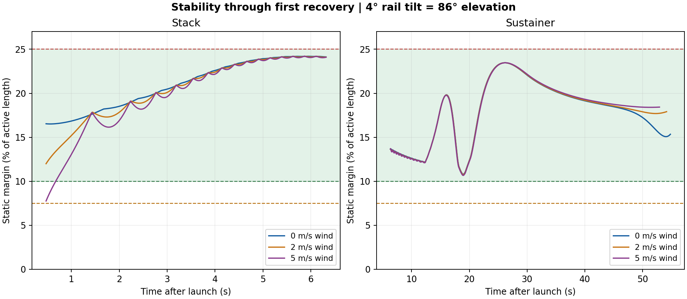
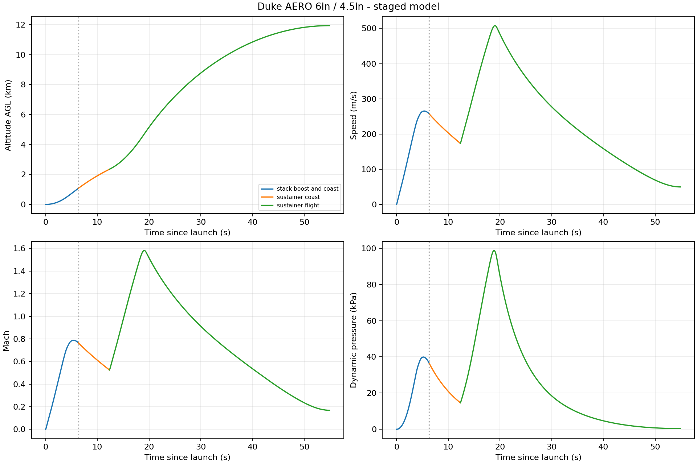

Separating airframe and motor mass
I kept airframe mass separate from the motor mass that RocketPy adds during flight. Counting a motor in both places would change launch mass, center of gravity, acceleration, and stability before any aerodynamic comparison began. For the staged model, I represented an unlit sustainer motor as carried mass, then switched to the active motor at ignition.
The simpler single-stage baseline in the GitHub repository uses estimated component-midpoint CG and simplified inertia, with an initial constant Cd of 0.50. I kept those assumptions visible because successfully running that script does not make its altitude prediction a reviewed result.
Handing the state from one phase to the next
I split the trajectory into stack boost, separated sustainer coast, sustainer powered flight, and booster return. The next phase must inherit attitude and angular velocity as well as position and velocity.
RocketPy tracks a reference point tied to the dry center of mass. That point changes when stages separate or an inert motor becomes active. I translated the position to the new reference and included the velocity offset from angular motion, ω × r, instead of simply copying the state vector. The model uses instantaneous separation with zero separation impulse.
Matching drag, motors, and launch geometry
I used Mach-dependent drag tables for the stack, sustainer, and booster, with powered and unpowered inputs available separately. I matched the motor curves and mass properties before comparing trajectories. These drag tables came from OpenRocket, so agreement between the tools checks the model transfer and flight calculation; it is not an independent validation of drag.
I also checked angle and rail conventions. Four degrees from vertical in OpenRocket is an 86° elevation in RocketPy. A physical 21 ft rail gives 5.6508 m of guided travel when the forward rail button sits 0.7500 m ahead of the base. Using the full physical rail as guided travel would overstate rail-exit speed.
Changing the fins and staging time
I retained the canards and changed the aft-fin planforms and sustainer ignition delay. The selected sustainer fin has a 240 mm root, 30 mm tip, 155 mm span, and 240 mm sweep. Compared with the preceding planform, the model predicted less drag near and above Mach 1; at Mach 1.1, the sustainer Cd changed from 0.514 to 0.447 using the same reference area.
The modeled launch mass increased by 0.243 kg, so the gain came mainly from the predicted drag change. I compared ignition delays with the geometry and selected a six-second delay after booster burnout. I also checked the stability minimum during the coast and second burn, where a satisfactory launch margin alone would miss a weak configuration.
Comparing the recorded predictions
With the matched no-wind inputs, OpenRocket predicted 11,917.7 m AGL and RocketPy predicted 11,936.3 m AGL, a difference of about 18.6 m. The OpenRocket result was about 697 m above the preceding configuration under the same motors, launch angle, and source atmosphere. These are simulation comparisons for the earlier two-stage study.
I also checked 0, 2, and 5 m/s wind cases and plotted static margin as a percentage of the active configuration’s length. Those are individual scenarios, not a Monte Carlo distribution. Fin attachment strength, flutter, and the interpretation of requirements for the small control surfaces remained unresolved.


Making the next study repeatable
I exposed motor, drag, launch, output, and wind inputs in the scripts and saved numerical histories alongside summaries and plots. The GitHub repository gives the current team a simpler single-stage starting point and guides for model maintenance, automation, and Monte Carlo. I kept the uncertainty workflow separate from the nominal model: a meaningful batch needs justified input distributions and a checked baseline before its spread can be interpreted.